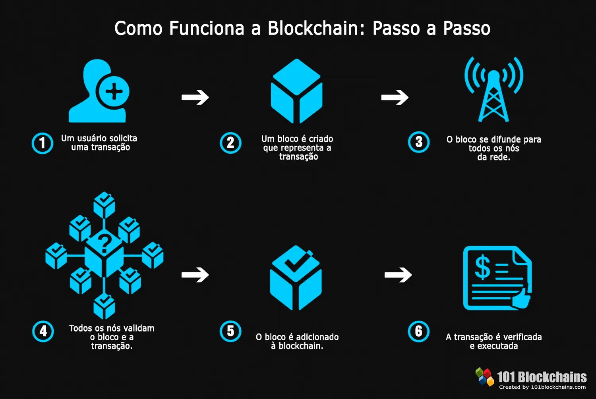

Nova Tecnologia de Inteligência Artificial Revoluciona Setor
Uma nova tecnologia de Inteligência Artificial (IA) está revolucionando diversos setores, desde a saúde até a indústria. Com algoritmos avançados de aprendizado de máquina, essa inovação permite que sistemas processem grandes volumes de dados em tempo real, oferecendo insights mais precisos e automação de processos complexos. Empresas estão utilizando a IA para melhorar a eficiência, personalizar serviços e tomar decisões mais informadas. Na saúde, por exemplo, ela já está ajudando a identificar doenças com maior precisão e em estágios iniciais. Esse avanço promete transformar a forma como operamos e interagimos com a tecnologia.
5G: O Futuro das Comunicações
O 5G, a quinta geração de redes móveis, está moldando o futuro das comunicações com sua capacidade de oferecer velocidades de internet até 100 vezes mais rápidas que o 4G, além de baixa latência e maior conectividade. Essa tecnologia possibilitará avanços significativos em áreas como Internet das Coisas (IoT), automação industrial e cidades inteligentes, permitindo a comunicação instantânea entre dispositivos. O 5G também abrirá portas para inovações em veículos autônomos, realidade aumentada e telemedicina, transformando a forma como interagimos com o mundo digital e impulsionando a economia global.
Blockchain: Mais que Criptomoedas

O blockchain vai além das criptomoedas, oferecendo uma tecnologia segura e descentralizada para armazenar dados. Ele é utilizado para rastrear produtos, garantir a autenticidade na cadeia de suprimentos, facilitar contratos inteligentes e transações financeiras, além de promover transparência na gestão pública e assegurar a integridade de registros médicos.